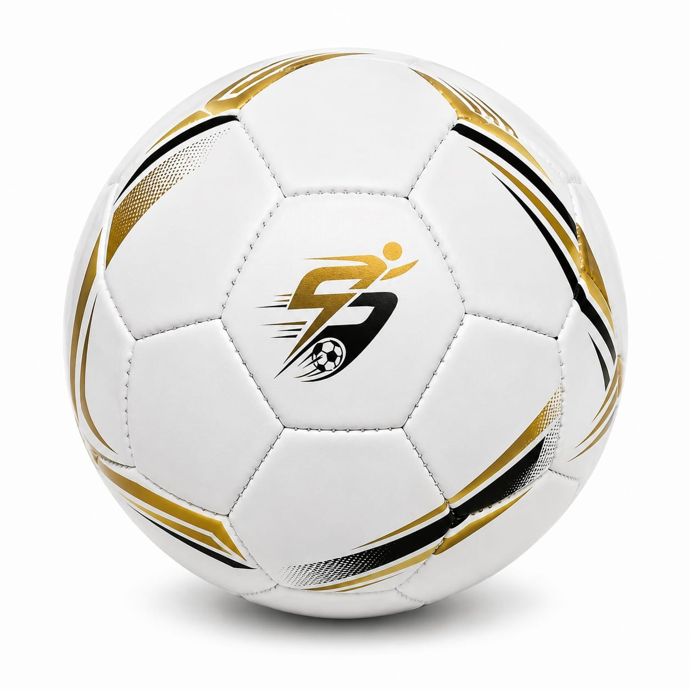
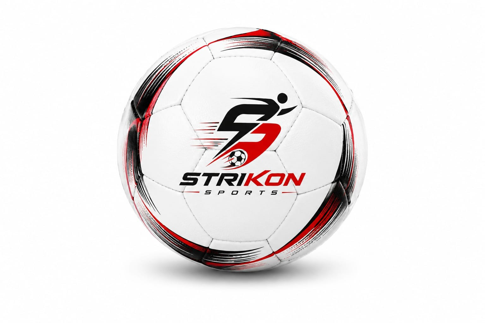

OUR COLLECTION
Choose Your Football Category

Thermal Bonded Footballs
Premium seamless footballs manufactured using advanced thermal bonding technology for professional matches, clubs and sports brands.
Explore Collection →
Hand Stitched Footballs
Traditional handcrafted footballs offering excellent durability and value for clubs, academies, schools and promotional markets.
Explore Collection →
Machine Stitched Footballs
Economical footballs designed for schools, academies, retailers and bulk promotional orders while maintaining dependable quality.
Explore Collection →